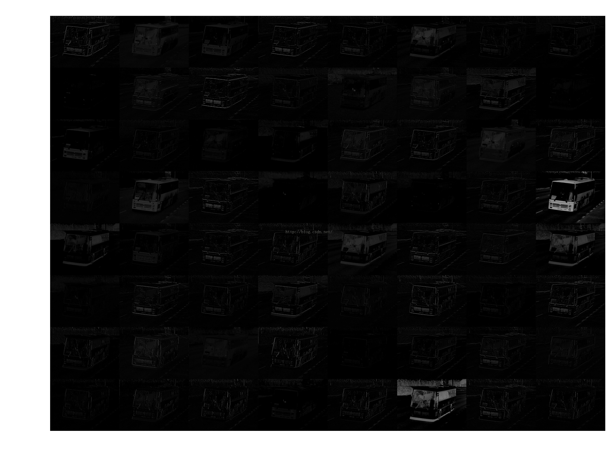
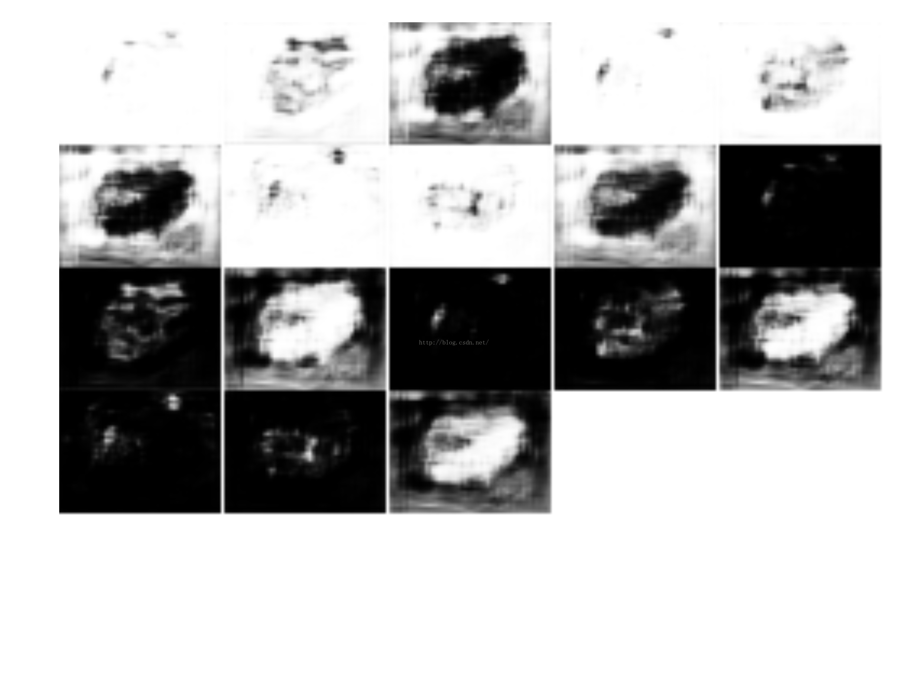
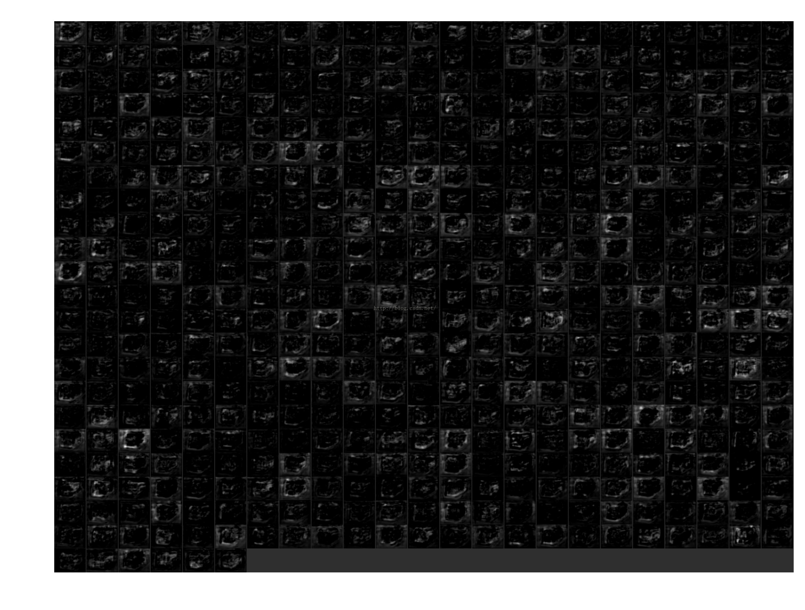

faster rcnn用python版本 https://github.com/rbgirshick/py-faster-rcnn
以demo.py中默认网络VGG16.
原本demo.py地址 [ https://github.com/rbgirshick/py-faster-
rcnn/blob/master/tools/demo.py ](https://github.com/rbgirshick/py-faster-
rcnn/blob/master/tools/demo.py)
样例
图有点多，贴一个图的部分结果出来：
上图是原图；
下面第一张是网络中命名为“conv1_1”的结果图；
第二张是命名为“rpn_cls_prob_reshape”的结果图；
第三张是“rpnoutput”的结果图
  
修改后的代码
看一下我修改后的代码：
1 | #!/usr/bin/env python |
代码讲解
1.在data下手动创建“feature_picture”文件夹就可以替换原来的demo使用了。
2.上面代码主要添加方法是：save_feature_picture，它会对网络测试的某些阶段的数据处理然后保存。
3.某些阶段是因为：if k.find(“conv”)>-1 or k.find(“pool”)>-1 or k.find(“rpn”)>-1这行代码（110行），保证网络层name有这三个词的才会被保存，因为其他层无法用图片保存，如全连接（参数已经是二维的了）等层。
4.放开174行print_param(net)的注释，就可以看到网络参数的输出。
5.执行的最终结果 是在data/feature_picture产生以图片名字为文件夹名字的文件夹，文件夹下有以网络每层name为名字的图片。
6.另外部分网络的层name中有非法字符不能作为图片名字，我在代码的111行只是把‘字符/’剔除掉了，所以建议网络名字不要又其他字符。
图片下载和代码下载
git clone https://github.com/meihuakaile/faster-rcnn.git